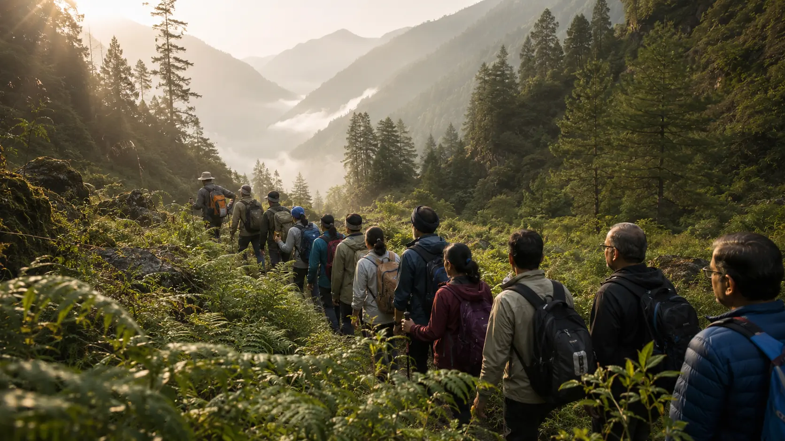

Medical readiness
Baseline assessment, physician review, monitoring and final clearance.
 Presents
Presents
21 people · 60 days · one six-day Himalayan expedition
A note from our founder
A personal introduction to the purpose, responsibility and hope behind the journey.



The purpose
We are bringing 21 people living with Type 2 diabetes together to prepare carefully, act visibly and learn responsibly.
A diagnosis can become more than a medical condition. It can become a psychological boundary, making people believe that certain experiences, ambitions and adventures are no longer meant for them. We want to challenge that belief.
Diabetes requires awareness, preparation and responsibility, but it should not automatically require a smaller life. With appropriate medical screening, physical preparation, acclimatisation, glucose monitoring and professional support, people living with Type 2 diabetes can continue to pursue meaningful and challenging goals.
Take your health seriously, but do not allow your diagnosis to define the boundaries of your life.
This is not a claim that everyone with diabetes should climb a mountain. Participants will be medically screened and trained, and the expedition will be supported by experienced trekking professionals and a medical and scientific governance framework. Safety remains the summit.
The expedition also offers an opportunity to observe how sustained physical activity at altitude may affect glucose regulation in appropriately selected people living with Type 2 diabetes.
Existing research is limited and not fully consistent. Hypoxia has sometimes been associated with lower glucose or improved glucose utilisation, while rapid ascent, physical stress, poor sleep, dehydration and acute mountain sickness can also worsen glycaemic control. We will not present altitude as a therapy or claim that climbing a mountain reverses diabetes.
Subject to appropriate medical and research oversight, measures such as continuous glucose monitoring, Time in Range, glucose variability, physical activity, sleep, oxygen saturation and symptoms may be observed before, during and after the expedition.
The initiative is hypothesis-generating, not a clinical trial or treatment claim. Even if the summit is not reached, every participant returning safely and well is the priority.


The expedition at a glance
SelectionMedical safety, readiness, commitment and group suitability.
SupportTrek professionals, medical oversight and NirogBhumi coordination.

The participant journey
From the first application to continuing the practices at home. Each stage has a clear purpose and a safety decision.

Stage 01 · Apply
Share your diabetes journey and why this expedition matters to you.
Initial application · 8–10 minutes
Stage 02 · Medical review
Complete the required health investigations and physician review.
Medical decision · not first-come-first-served
Stage 03 · Prepare for 60 days
Follow the daily programme, attend reviews and progress gradually.
About one focused hour each morning
Stage 04 · Final clearance
Participation remains conditional on medical and fitness clearance.
Safety decision · before departure
Stage 05 · Join the expedition
Complete the supported six-day route with the selected group.
World Diabetes Day goal · 14 Nov 2026Stage 06 · Return and continue
Bring the learning home and continue the practices beyond the mountain.
Responsible return · long-term continuity

60 days before departure
Sixty days of practical, progressive preparation across six connected pillars.
Baseline assessment, physician review, monitoring and final clearance.
Mobility, balance, strength, breathing, recovery and body awareness.
Progressive walking, stairs, mobility and functional strength.
Practical whole-food routines and sustainable metabolic habits.
Sleep regularity, restorative practices and training-fatigue management.
Breathwork, meditation, stress regulation, reviews and accountability.
The six-day expedition
The approved route will prioritise gradual progression, professional support and access appropriate to the selected group. The detailed itinerary follows route and medical review.
Region, elevation profile, walking distances and acclimatisation plan will be published after approval.
“Diabetes should not make life smaller.”

Safety and screening
Final participation depends on medical review. Medical and mountain-safety decisions take priority over personal goals at every stage.
Health history, baseline investigations, physician approval and individual risk assessment.
Fitness and health response are reviewed throughout the 60 days.
A final medical decision is required before joining the expedition.
Daily checks, trained expedition professionals and emergency response protocols.
Before you apply
Good starting fit
Have these details ready
Applicants should not have another major or uncontrolled diagnosis that could make sustained exertion or altitude unsafe, including active cancer, serious heart disease, advanced kidney disease, severe vision or nerve complications, or a recent major surgery. Every application remains subject to individual medical screening and final physician clearance.
Application does not guarantee selection. NirogBhumi does not replace your treating doctor. Never stop or change medication without medical supervision.
Ready for the first step?Apply Now ↗

Updates and learning
Preparation updates, participant voices and responsible group-level observations will appear here as the journey progresses.
Live preparation dashboard
Participant voices · Before selection
“I want to stop seeing diabetes as a limitation.”
“I have never imagined myself in the Himalayas.”
“I want my family to see what consistent effort can make possible.”
Photograph and city
Brief diabetes journey
Why they applied
What they fear
What they hope to achieve
Preparation updates
Preparation methodology and adherence
Aggregate, anonymised health observations
Time in Range and glucose variability, where appropriate
Fitness and walking progression
Participant reflections and daily journal
Photography and short films
Safety and operational learning
Final report and future recommendations
Dated preparation, selection, partner and trail updates will appear here as each milestone is reached.
Ways to come on board
Participate, nominate, support the work or follow the journey.
Apply for one of 21 expedition places.
Apply Now ↗ 02Recommend a person living with Type 2 diabetes.
Nominate ↗ 03Medical knowledge, equipment, travel, logistics or responsible storytelling.
Health · Support · MediaPartner ↗ 04Receive preparation stories and key updates.
Follow ↗

Applications nationwide
The application takes about 8–10 minutes. Applying does not guarantee selection, and clinical documents will only be requested later through an approved secure process.
Apply Now ↗
Before you apply
No. The planned route is simple to moderate, and the 60-day phase builds readiness. Final participation still depends on medical and fitness clearance.
No. Up to 21 people will be selected through multiple stages based on medical safety, readiness, commitment and group fit.
No. Never stop or change diabetes medication or insulin without your treating doctor's direction. NirogBhumi does not replace your doctor.
Participants follow an approximately one-hour morning routine supported by health review, movement, nutrition and habits, recovery, stress regulation and weekly accountability.
The final programme amount is still being confirmed. The current placeholder is ₹ XX,XXX and will be replaced before applications formally open.
Not as individual medical data. Public findings will be anonymised and aggregated. Personal stories or identifiable media require separate explicit consent.